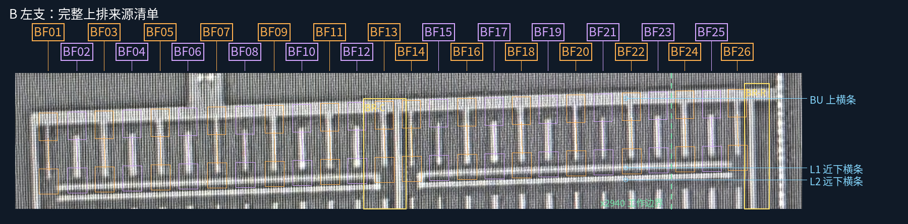
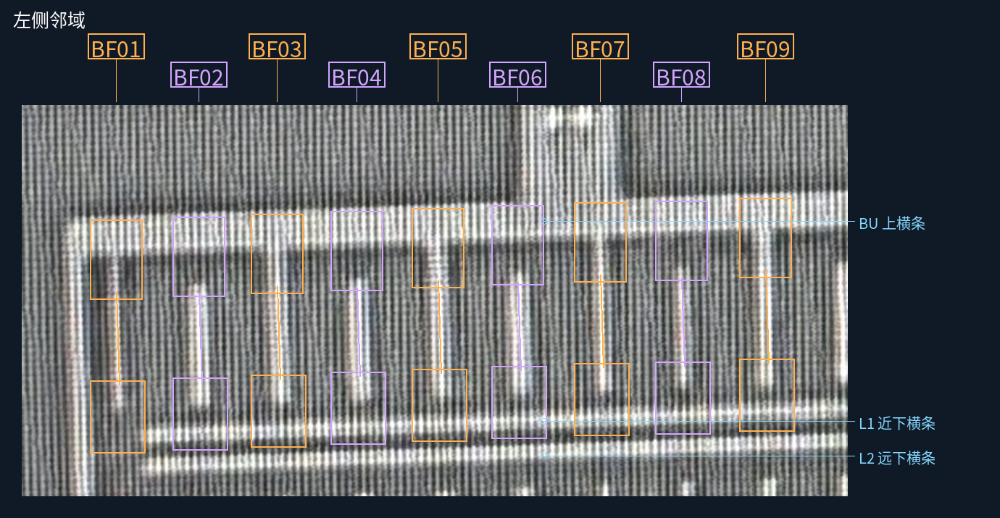
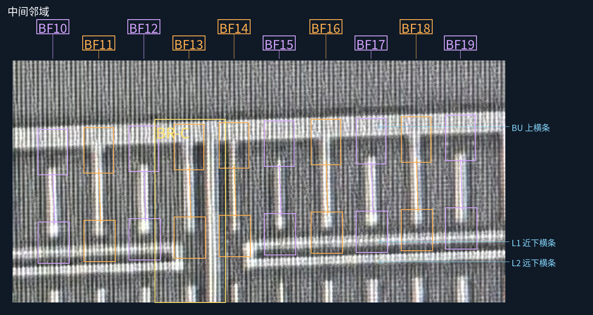

右侧大邻域：BF24／25／26为当前走廊
点击图像可打开原尺寸。

已按原生 M1 照片逐根编号。所有判断仍为 AI 候选，工作模型、11 个已审接口和 46 个设计孔中心保持不变；本轮没有补几何或连接。
“未见直接接触”不等于电气悬空或全局隔离；亮条材料身份和隐藏连接仍可能需要裁决。BR-C／BR-R为长线背景，不混算短指。下排竖条不计入本次上排清单。
直接看当前走廊三条 · 全部编号表 · CSV · 来源清单 · 保持不变的五层工作页
BF24、BF26倾向接上方BU；BF25两端留缝，暂不接上下横条。请判断这三条的局部关系；如果BF25接下方细线或并非M1，请指出。其余23条及长返回线不会随这次答复自动批准。
L1/L2仅表示近、远两条下横线；左段和右段分开记录，没有跨中央返回区合并。黄色BR窗是长线检查邻域，可与已编号短指邻域重叠，不是整片排除区。
点击图像可打开原尺寸。

点击图像可打开原尺寸。

点击图像可打开原尺寸。

点击图像可打开原尺寸。
原生x为近似定位；照片中的细条有斜度，编号不是精确GDS中心。
| 编号 | 原生x | 局部接触候选 | 下方横条上下文 | 范围 |
|---|---|---|---|---|
| BF01 | 1705 | 倾向接上横条 BU | L1-L | 仅原图上下文 |
| BF02 | 1762 | 上下两端均见间隙 | L1-L | 仅原图上下文 |
| BF03 | 1816 | 倾向接上横条 BU | L1-L | 仅原图上下文 |
| BF04 | 1871 | 上下两端均见间隙 | L1-L | 仅原图上下文 |
| BF05 | 1927 | 倾向接上横条 BU | L1-L | 仅原图上下文 |
| BF06 | 1982 | 上下两端均见间隙 | L1-L | 仅原图上下文 |
| BF07 | 2039 | 倾向接上横条 BU | L1-L | 仅原图上下文 |
| BF08 | 2095 | 上下两端均见间隙 | L1-L | 仅原图上下文 |
| BF09 | 2153 | 倾向接上横条 BU | L1-L | 仅原图上下文 |
| BF10 | 2208 | 上下两端均见间隙 | L1-L | 仅原图上下文 |
| BF11 | 2263 | 倾向接上横条 BU | L1-L | 仅原图上下文 |
| BF12 | 2317 | 上下两端均见间隙 | L1-L | 仅原图上下文 |
| BF13 | 2371 | 倾向接上横条 BU | 中间返回区，正下方无同一条横条 | 仅原图上下文 |
| BF14 | 2425 | 倾向接上横条 BU | L1-R | 仅原图上下文 |
| BF15 | 2479 | 上下两端均见间隙 | L1-R | 仅原图上下文 |
| BF16 | 2535 | 倾向接上横条 BU | L1-R | 仅原图上下文 |
| BF17 | 2589 | 上下两端均见间隙 | L1-R | 仅原图上下文 |
| BF18 | 2643 | 倾向接上横条 BU | L1-R | 仅原图上下文 |
| BF19 | 2696 | 上下两端均见间隙 | L1-R | 仅原图上下文 |
| BF20 | 2751 | 倾向接上横条 BU | L1-R | 仅原图上下文 |
| BF21 | 2805 | 上下两端均见间隙 | L1-R | 仅原图上下文 |
| BF22 | 2861 | 倾向接上横条 BU | L1-R | 仅原图上下文 |
| BF23 | 2914 | 上下两端均见间隙 | L1-R | 仅原图上下文 |
| BF24 | 2967 | 倾向接上横条 BU | L1-R | 当前走廊 |
| BF25 | 3020 | 上下两端均见间隙 | L1-R | 当前走廊 |
| BF26 | 3071 | 倾向接上横条 BU | L1-R | 当前走廊 |
亮度剖面只提出横向位置；28个峰中，x2397和x3100属于长线背景，已从短指计数剔除。归属按较大邻域和两端间隙观察，不由亮度峰或交替规律自动决定。端部矩形只是检查窗口，不是提取轮廓。未执行跨层投影或V1识别。
源图、编号/CSV及静态资源已检查，浏览器交互未实测。